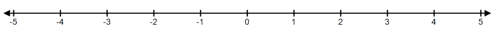

Consider an object moving along a line with velocity \(v(t)=\pi \sin (\pi t)\) on \([0,2]\) and initial position \(s(0)=0\). Time is measured in seconds and velocity in m/s.
- (a)
- Determine the position function, \(s(t)\), on \([0,2]\).
- (b)
- Mark the position of the object at the time \(t=1\) on the line below.

- (c)
- Determine the average velocity, \(v_{av}\), of the object during the interval \([0,2]\).
- (d)
- Determine when the motion is in the positive direction.
- (e)
- At what time (or times) is the object farthest from the origin?
Object is farthest from the origin when \(\mid {s(t)-0}\mid =\mid {1-\cos (\pi t)}\mid \) is maximized. Since \(s(t) \ge t\) for \(t\) in \([0,2]\) we need to maximize \(s(t)\). Finding critical points on the open interval \((0,2)\).\begin{align*} v(t)=0 &\iff \pi \sin (\pi t)=0\\ &\implies \pi t=\pi \\ &\iff t=1 \end{align*}
Finding the absolute maximum, we have to check the endpoints and the critical points:
\begin{align*} s(0)&=0\\ s(1)&=2\\ s(2)&=0 \end{align*}Hence the object is farthest from the origin at \(t=1\).